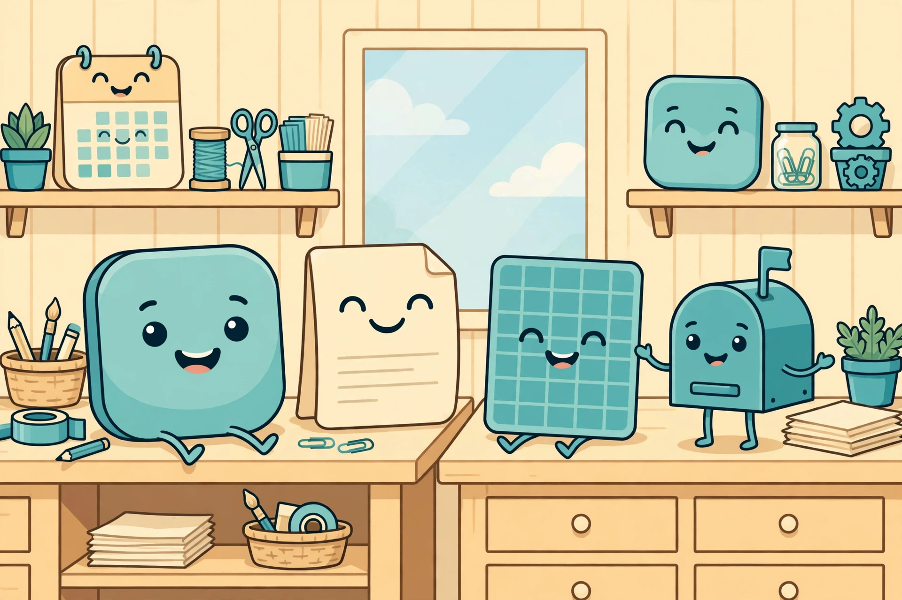

Welcome to the App Workshop — every app on its bench, every category on its shelf, and a friendly window to show you around.
Meet Appy the App Window, the mascot of this world.
The Signature App Archive is the Signature archive of apps: 86,194 app records across ten categories — word, sheet, slides, mail, calendar, notes, accounting, inventory, pos, and hr — each one a Signature-made app with a plain description of what it does.
Two working tools, right here on the page. Each one says what it does and what it cannot do. Neither tool reaches the live web, and neither one needs a key.
Enter an app category to count how many of the 500-title sample records sit in it.
Category:
Picks one real app from the 500-title sample, from a seed. The same seed always picks the same app.
Seed:
Designs, printables, and demos — free, downloadable, usable on the page. Every product is labeled Signature or Fun. Nothing here is for sale.
A printable sheet of app-icon stickers in the App Workshop style, ready to cut out.
Making: print the printable file on sticker paper, cut along the outlines, and stick them on a notebook or a laptop lid.
A paper ornament: a smiling app window to stand on a desk, with a small calendar and a mailbox beside it.
Making: print the printable file on card, cut out the window, the calendar, and the mailbox, fold along the marked lines, and glue the tabs.
A set of flashcards for the ten app categories, one card per category with its name and a plain description.
Making: print the printable file on card, cut out the cards, and sort them by category. The categories and counts come from the archive index.
Download all product lines as a printable (text)
Appy once opened every app in the workshop at once, just to see what would happen. The calendar waved, the mailbox sang, and the spreadsheet counted to ten and stopped. (Fun — a made-up tale, not a record.)